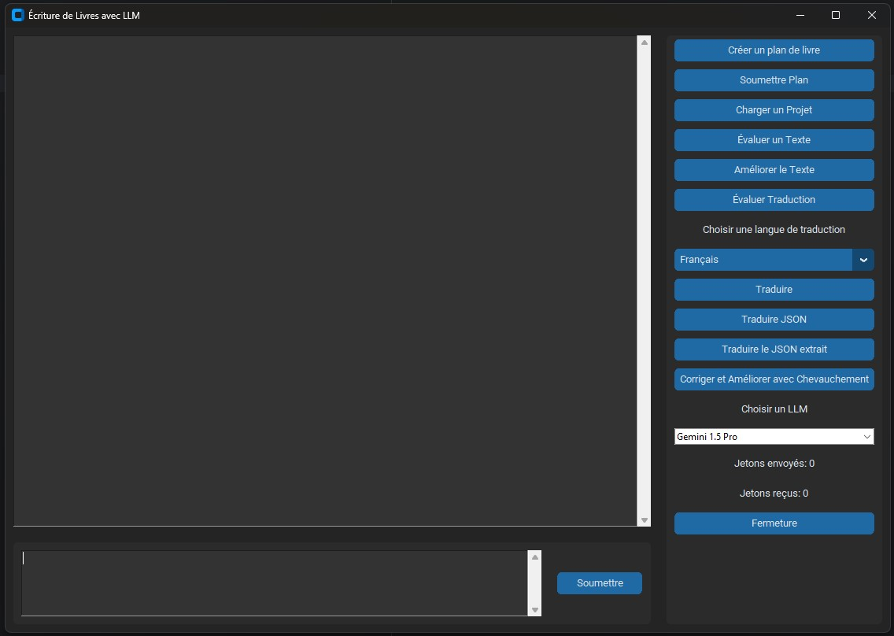

GPT-Next : Un Bond de 100x dans l'Intelligence Artificielle
Publié le 04 septembre 2024
Introduction
OpenAI a annoncé GPT-Next, un modèle 100 fois plus puissant que GPT-4, dont la sortie est prévue pour la fin 2024. Ce bond significatif est rendu possible grâce à des améliorations dans l'architecture et les méthodes d'apprentissage, sans augmentation de la puissance de calcul.
Les Nouvelles Capacités de GPT-Next
GPT-Next intègre deux projets majeurs : Strawberry et Orion. Strawberry améliore la capacité de raisonnement et de résolution de problèmes, en particulier dans des domaines comme les mathématiques et la programmation. Orion, quant à lui, fait progresser les capacités multimodales de l'IA, permettant à GPT-Next de traiter non seulement du texte, mais aussi des images et des vidéos.
Cette approche multimodale ouvre des possibilités infinies pour des applications variées, allant de la recherche scientifique à la création de contenu visuel.
Ce que cela signifie pour les utilisateurs
GPT-Next transformera l'interaction des utilisateurs avec l'IA, rendant des tâches complexes comme l'analyse de données à grande échelle, les processus décisionnels, et les diagnostics médicaux plus accessibles et efficaces.
Extrapolation : La Création Littéraire avec GPT-Next
Avec un modèle 100 fois plus puissant que GPT-4, l'avenir de la création littéraire pourrait être révolutionné. Cette extrapolation imagine comment GPT-Next pourrait impacter l'écriture assistée par IA.
-
Créer des romans complets et cohérents avec plusieurs arcs narratifs et une profondeur émotionnelle.
-
Générer des univers littéraires entiers avec des visuels et une narration intégrés.
-
Offrir des histoires personnalisées adaptées aux goûts des lecteurs, aux styles d'écriture, et aux caractéristiques des personnages.
-
Collaborer avec des écrivains humains, permettant des ajustements en temps réel dans le brainstorming et le développement de l'histoire.
Conclusion
GPT-Next représente l'aube d'une nouvelle ère dans l'IA, qui pourrait redéfinir notre approche de l'écriture et de la narration. Les frontières entre la créativité humaine et celle de l'IA deviendront de plus en plus floues.
Explorations Narratives : "Longwriter LLaMA 3.1 8B" et Xavier - Le Boucanier Cosmique
Publié le 01 septembre 2024
Introduction
Dans le monde des modèles de langage, les capacités à générer du texte long et cohérent sont souvent considérées comme l'un des défis les plus complexes. Aujourd'hui, nous vous présentons un modèle qui repousse les limites de ce que l'on pensait possible en matière de génération de contenu : le "Longwriter LLaMA 3.1 8B". Ce modèle, basé sur LLaMA 3.1 avec 8 milliards de paramètres, a démontré une aptitude remarquable à créer des récits étendus, comme en témoigne l'écriture complète de l'histoire "Xavier - Le Boucanier Cosmique".
Une Histoire de Rébellion dans les Étoiles
"Xavier - Le Boucanier Cosmique" n'est pas un roman ordinaire ; il est le produit d'une IA capable de générer des chapitres de 10 000 mots d'une seule traite, tout en maintenant une cohérence narrative sur l'ensemble de l'histoire. Ce récit de science-fiction mêlant aventure, piraterie spatiale et lutte contre une mégacorporation oppressive illustre parfaitement le potentiel de "Longwriter LLaMA 3.1 8B".
La Technique "Longwriter" : Un Bond en Avant pour les LLMs
Le succès de "Xavier - Le Boucanier Cosmique" repose sur une approche innovante d'entraînement supervisé appelée "Longwriter". Cette technique exploite le potentiel des grands modèles de langue pour produire des textes longs tout en préservant la qualité narrative. En ajustant le modèle pour qu'il prenne en compte de longues séquences de texte, "Longwriter LLaMA 3.1 8B" parvient à maintenir une continuité narrative qui, autrement, serait difficile à atteindre.
Pour générer l'histoire de "Xavier - Le Boucanier Cosmique", j'ai utilisé LM Studio avec une carte graphique RTX 3070 Ti équipée de 8 Go de VRAM pour l'inférence. Le processus d'écriture du premier chapitre a pris entre 15 et 20 minutes. Cependant, au fur et à mesure que le contexte envoyé au modèle s'allongeait, le temps de génération augmentait également. Le dernier chapitre, par exemple, a nécessité environ 5 heures pour être écrit.
Défis et Opportunités
Bien que le modèle "Longwriter LLaMA 3.1 8B" ait montré des performances impressionnantes, l'écriture de longs textes présente toujours des défis. Par exemple, le maintien d'une profondeur émotionnelle et d'une complexité psychologique des personnages sur des milliers de mots peut parfois être perfectible. Cependant, ces défis sont également des opportunités : avec un raffinement supplémentaire, cette technologie pourrait révolutionner la manière dont nous concevons l'écriture assistée par IA, que ce soit dans la fiction, la rédaction de rapports détaillés, ou d'autres domaines nécessitant une narration étendue.
Vers l'Avenir
L'expérience avec "Xavier - Le Boucanier Cosmique" démontre que nous sommes à l'aube d'une nouvelle ère où les LLMs ne sont pas seulement des outils de génération de texte, mais des co-auteurs capables de créer des œuvres littéraires complètes. Alors que nous continuons à explorer les possibilités offertes par des modèles comme "Longwriter LLaMA 3.1 8B", nous pouvons imaginer un futur où la frontière entre l'écriture humaine et l'écriture par IA devient de plus en plus floue, ouvrant la voie à des collaborations créatives inédites.
Conclusion
"Longwriter LLaMA 3.1 8B" est plus qu'un simple modèle de langage ; c'est une fenêtre sur l'avenir de la création narrative. En prenant "Xavier - Le Boucanier Cosmique" comme exemple, nous voyons le potentiel incroyable des IA pour non seulement assister les écrivains, mais aussi pour générer des œuvres originales qui captivent et inspirent. À mesure que nous affinons ces technologies, le rôle de l'IA dans la création littéraire ne peut qu'évoluer et s'étendre.
L'Avenir de l'Éducation avec l'IA : Un Atout Majeur pour les Élèves Dyslexiques
Publié le 30 août 2024
Introduction
L'intelligence artificielle (IA) transforme rapidement l'éducation, offrant de nouveaux outils et possibilités pour améliorer l'expérience d'apprentissage de tous les élèves, en particulier ceux ayant des troubles de l'apprentissage comme la dyslexie. Ce blog explore comment l'IA redéfinit l'éducation et devient une ressource précieuse pour les élèves dyslexiques.
Apprentissage Personnalisé avec l'IA
L'un des avantages les plus significatifs de l'IA dans l'éducation est la possibilité de personnaliser l'apprentissage. Pour les élèves dyslexiques, l'IA peut ajuster la difficulté des textes, fournir des explications supplémentaires, et présenter l'information sous différents formats, rendant l'apprentissage plus accessible et efficace.
Outils d'IA pour les Élèves Dyslexiques
L'IA propose des outils comme les logiciels de synthèse vocale qui lisent à haute voix, aidant les élèves dyslexiques à suivre plus facilement. De plus, les correcteurs orthographiques et grammaticaux basés sur l'IA offrent des suggestions personnalisées, aidant au développement des compétences en écriture.
Réduction de l'Anxiété liée à l'Apprentissage
L'IA peut créer un environnement d'apprentissage favorable en adaptant les tâches aux capacités de l'élève, réduisant ainsi l'anxiété et encourageant une attitude positive envers l'apprentissage.
Conclusion
L'intégration de l'IA dans l'éducation est très prometteuse, notamment pour rendre l'apprentissage plus inclusif et favorable. Pour les élèves dyslexiques, l'IA offre des outils qui peuvent les aider à surmonter les obstacles traditionnels, en leur assurant une chance de réussir.
Quand les Histoires Continuent : L'IA au Service des Univers Littéraires
Publié le 27 août 2024
Introduction
Il est tout à fait possible de créer des suites à des histoires inachevées, d'explorer des parties narratives non expliquées ou de réécrire une histoire du point de vue d'un autre personnage, en utilisant des modèles de langage avancés comme les grands LLM (Large Language Models). Voici comment ces modèles peuvent enrichir et prolonger l'expérience littéraire, même lorsqu'il s'agit d'œuvres protégées par le droit d'auteur.
Compléter et Prolonger des Histoires Inachevées
Les grands LLM, formés sur une vaste collection d'œuvres littéraires, sont capables de comprendre les styles d'écriture, les thèmes, et les arcs narratifs d'une œuvre donnée. Par exemple, dans un projet comme celui de poursuivre l'histoire de Sauron, le seigneur des Anneaux, ces modèles peuvent extrapoler les intentions de l'auteur original, tout en respectant la tonalité et le contexte de l'univers créé. Bien que ces œuvres ne puissent pas être publiées pour des raisons de droits d'auteur, elles constituent un excellent exercice créatif pour les amateurs et peuvent offrir des conclusions satisfaisantes à des récits laissés en suspens.
Remplir les Vides Narratifs
Certains récits laissent volontairement des zones d'ombre ou des parties inexpliquées, ce qui peut frustrer ou intriguer les lecteurs. Les LLM peuvent générer des récits qui comblent ces lacunes, ajoutant de la profondeur et des détails aux intrigues existantes. Par exemple, le chapitre extrait de Sauron montre comment l'histoire pourrait être étendue pour explorer plus en détail la transformation du personnage de Mairon en Sauron, offrant ainsi une perspective plus complète sur ses motivations internes et son évolution.
Changer de Perspective
Raconter une histoire du point de vue d'un autre personnage est un moyen puissant de renouveler un récit bien connu. Les LLM peuvent créer des histoires engageantes en adoptant le point de vue de personnages secondaires ou même antagonistes, fournissant une nouvelle lumière sur les événements ou des contextes alternatifs qui enrichissent l'expérience de lecture. Cela est particulièrement pertinent pour des œuvres classiques où les perspectives supplémentaires peuvent offrir une richesse narrative supplémentaire, comme ce pourrait être le cas avec un récit centré sur les pensées et les dilemmes de Sauron pendant les grands événements de la Terre du Milieu.
Une Précaution Essentielle : Le Respect des Droits d'Auteur
Il est important de noter que, même si ces œuvres générées par l'IA sont divertissantes et offrent une profondeur narrative supplémentaire, elles ne peuvent pas être publiées ou vendues sous peine d'enfreindre les droits d'auteur. Toutefois, elles demeurent une source de plaisir personnel pour les lecteurs, et un moyen créatif d'explorer davantage les univers qu'ils adorent.
Conclusion
En conclusion, les grands LLM, tels que ceux disponibles aujourd'hui, sont capables de prolonger, enrichir, et réinventer des récits existants d'une manière qui respecte l'esprit des œuvres originales tout en offrant des perspectives nouvelles et engageantes. Que ce soit pour combler des lacunes, apporter des conclusions à des récits inachevés ou explorer de nouveaux points de vue, ces technologies ouvrent des possibilités infinies pour les amateurs de littérature.

Présentation de l'Interface Utilisateur pour l'Écriture de Livres avec LLM
Publié le 25 août 2024
Introduction
Aujourd'hui, nous vous présentons un aperçu de l'interface utilisateur de notre application d'écriture de livres assistée par LLM. Cette interface a été conçue pour faciliter la création littéraire en intégrant des fonctionnalités clés telles que la génération de plans de livres, l'évaluation de texte, l'amélioration stylistique, et la traduction multilingue.
L'image ci-dessus montre l'interface actuelle, avec un panneau de contrôle permettant de choisir la langue de traduction, de sélectionner un modèle de langage, et de suivre les jetons utilisés au cours des interactions. Cette interface intuitive vise à rendre l'écriture et la traduction accessibles à tous, qu'il s'agisse de professionnels ou d'amateurs de littérature.
Résumé du Processus d'Écriture et de Traduction des Livres chez Sphere A.I. Books
Le processus de création littéraire et de traduction chez Sphere A.I. Books repose sur une approche innovante utilisant des modèles de langage avancés. Ces modèles sont configurés pour produire des livres originaux en plusieurs langues tout en garantissant une qualité littéraire élevée. Voici un aperçu ordonné des aspects importants de cette méthode :
- Sélection du Modèle de Langage : Le système utilise des modèles de langage configurés pour répondre aux besoins spécifiques de l'écriture et de la traduction. Ces modèles sont ajustés pour contrôler le style, la tonalité, et la qualité du texte produit, en s'adaptant aux évolutions technologiques futures.
- Génération du Plan de Livre : Le processus commence par la génération d'un plan détaillé basé sur une description initiale de l'histoire fournie par l'utilisateur. Ce plan structure le contenu narratif en définissant les chapitres et en fournissant des résumés succincts.
- Écriture des Chapitres : Chaque chapitre est divisé en plusieurs parties, avec une attention particulière aux détails, aux dialogues, et à la continuité narrative. Le modèle s'assure également que les chapitres se terminent de manière cohérente et satisfaisante.
- Résumé et Conclusion : Une fois la rédaction terminée, un résumé détaillé du chapitre est généré pour capturer les éléments essentiels de l'intrigue et préparer le terrain pour les chapitres suivants.
- Traduction Multilingue : Le système peut traduire le texte généré dans plusieurs langues, en maintenant la qualité et le ton original du texte. La traduction est soigneusement ajustée pour s'assurer que le sens et le style sont préservés dans la langue cible.
- Compilation et Révision Finale : Une fois tous les chapitres rédigés, le livre est compilé, et des vérifications sont effectuées pour détecter d'éventuelles erreurs ou duplications. Le texte final est évalué selon des critères prédéfinis tels que la cohérence, la répétitivité, et l'atmosphère, garantissant un produit final de haute qualité.
Le processus d'écriture et de traduction chez Sphere A.I. Books est un exemple d'innovation en littérature, où chaque étape est optimisée pour produire des œuvres littéraires riches et engageantes. En s'adaptant continuellement aux avancées technologiques, ce système permet de créer du contenu de qualité supérieure, prêt à être partagé avec un public mondial.
Pourquoi le Contenu Généré par l'IA Est-il l'Avenir de la Littérature Jeunesse?
Publié le 24 août 2024
Introduction
L'intelligence artificielle (IA) a fait des avancées spectaculaires ces dernières années, bouleversant divers secteurs, dont celui de la création littéraire...
Le Pouvoir de la Personnalisation
L'un des plus grands avantages du contenu généré par l'IA pour la littérature jeunesse...
Un Apprentissage Plus Engagé et Efficace
La littérature jeunesse a un rôle crucial dans le développement des compétences en lecture et en écriture...
L'IA au Service de la Diversité et de l'Inclusion
La diversité dans la littérature jeunesse est essentielle pour que chaque enfant puisse se voir dans les histoires qu'il lit...
Des Histoires Évolutives et Interactives
Un autre avantage du contenu généré par l'IA est la possibilité de créer des histoires évolutives...
Conclusion
Le contenu généré par l'IA ouvre de nouvelles perspectives passionnantes pour la littérature jeunesse...